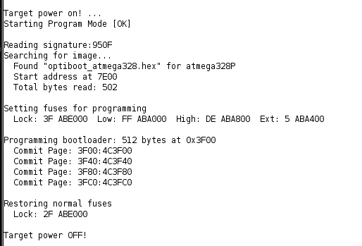
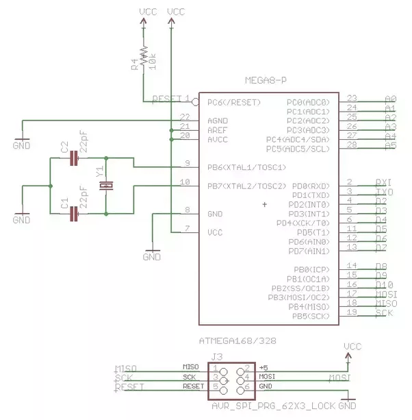

[2.2.18]
Prepping the ATmega328P
| Binary Watch
Now that the basis code is all ready, it was time to test it out without help of the Arduino UNO, straight with the hardware of the ATmega328P.
After doing research, if you have a completely empty ATMega328P, you need to burn the bootloader, load the new code, and burn the fuse bytes to be clocked by an external clock (not to mention find a way how to burn the fuse bytes).
I didn't know how to do any of this at first, but with careful research and reading of a lot of stackexchange forum posts and blog posts, I was able to complete these seemingly tough tasks.
Burning the bootloader is important if you want to program the ATMega328P through the ArduinoIDE, it allows the arduinoIDE to communicate to the microcontroller and write the code accurately to the memory.
There are multiple ways to go about burning the bootloader, but
many of the suggested ways on the Arduino website failed to succeed
with my ATMegas, so I resorted to a much easier setup, with optiLoader.
Following this documentation, I got the bootloader setup correctly.
You need an Arduino UNO, a 16MHz crystal, 2 22pF capacitors, and a 10K resistor. Some say you can do it with or without the 16MHz crystal and the capacitors, but mine wouldn't work without them, so it's a good idea to have some on hand in case you get the same errors I did.
First, create a directory in your Arduino folder, where all the
sketches are usually kept. Name the directory optiLoader,
and in that directory, use git to clone the repo into that folder:
git clone https://github.com/WestfW/OptiLoader.git
after it clones, upload the .ino file to the UNO,
then setup your breadboard.
The breadboard setup looks like this, adding the capacitors and 16MHz crystal needed:
Once done, double check your wires, I goofed up on one and it threw my circuit off. Double checking always pays off!
Plug the Arduino UNO into a power source, open the serial monitor at baud (19200), and you should see the output of success or failure!
Congrats, you just burned your bootloader.
Next step, burning the fuse bytes....but uh, what are those? How does that all work?
There are usually two or three fuse bytes in a microcontroller, and these fuse bytes are programmed to tell the microcontroller how to work, for example: which clock to use (external, internal, how fast/slow), how much memory to set aside for programs, the boot sequence, watchdog timer setup, etc.
They're factory set when you buy them, so if you end up messing
around with the circuit and find you need an external crystal like I
did, you're gonna need to reprogram the fuse bytes.
A counterintuitive part of this process is: a bit set to 0
means it is programmed, and a bit set to 1 is unprogrammed.
WARNING: if you do not do this correctly, you may end up with a microcontroller that does not work!
Still with me? Didn't get scared? Great. Let's move on!
I recommend pulling up the ATmega328P datasheet to follow along in this topic, you'll need to scan through it as I go over things.
There are two fuse bytes we'll be working with. The High fuse byte and the Low fuse byte. There are 8 bits within each, and they all stand for a different setting.
This is the HIGH fuse byte, 0b11011001. As you can see, certain 1s are unprogrammed and the 0s are programmed.
The fuse byte that we'll be toying with is the LOW fuse byte:
In a very helpful article, they mentioned that you do not want CKDIV to be programmed if you're adding a crystal, so I automatically know that's 1. We're going to leave CKOUT, and move on to finding SUT1, SUT0, and CKSEL3..0.
In the chart above, we see that there are multiple different clocks you can program the ATmega328P to choose from. In our case, we want the Low Power Crystal Oscillator, which, on the side, means that based on how we configure it, the nybble of CKSEL could be anywhere from 1111 to 1000. That gives us a good approximation, and helps us move onto the next chart:
Here, this chart tells us what CKSEL will be based on the MHz value
of our crystal. I'm using a 16MHz, so CKSEL[3:1] is going to be 111.
That also means I'll use two 22pF capacitors.
Alright, so we have the first part of our LOW byte, now we need to figure out what CKSEL0 and SUT[1:0] are.
Woot woot! Final chart!
Go down and find Crystal Oscillator, which is what we're using, and
we're going to "select" slowly rising power. This will
help save battery life in the long run, even if it loses a bit of
accuracy. (it'll be accurate enough.)
Therefore, our whole byte looks like this:
CKDIV8 1
CKOUT 1
SUT1
1
SUT0
1
CKSEL3 1
CKSEL2 1
CKSEL1 1
CKSEL0 1
0b11111111, or 0xFF in hexadecimal. Now, we can officially set up our hardware to burn these fuse bytes to the GND!
...ha. See what I did there?
Your circuit setup, if using the Arduino UNO as the ISP programmer, should look something like this:
UNO pin 11 (MOSI) -- atmega pin 18
UNO pin 12 (MISO) -- atmega pin 17
UNO pin 13 (SCK) -- atmega pin 19
UNO pin 10 (SS) -- atmega pin 1
Connect all Vcc's and GNDs.
Put the external 16MHz crystal and connect it to the crystal pins on
the ATmega, physical pins 9 and 10, then add the capacitors and
ground them, basically the same setup as when you burned the
bootloader.
.......And then, I derped.
Turns out when you burn the bootloader it already set the low fuse
byte to 0xFF, so I didn't have to burn the fuse bytes at all!
Ah, oh well, it was a good learning experience to understand
datasheets more. :)
SO! I loaded my binary watch program, placed it back in the circuit...and it still didn't work. Gah. Super frustrating.
I decided to go back to basics and look up what's actually needed for an ATMega328P to work individually on a breadboard, and this Quora post saved my patookie: https://www.quora.com/Can-I-use-ATmega328P-without-Arduino-just-using-it-in-breadboard-for-projects
This picture shows the basics of what you need for your ATmega:
10Kohm Resistor to RESET pin
AGND to GND
AREF and AVCC to Vcc
the Clock on pins XTAL1 and XTAL2(PB6 and PB7) with capacitors tied
to GND
And of course the regular Vcc and GNDs. I realized my derpiness and found that I hadn't connected a 10K resistor to RESET, nor had I connected AREF and AVCC to Vcc. I fixed both of those, restarted the microcontroller, and viola! My code was working!!
Recap:
Make sure you have not just the right pins, but ALL the pins needed to make sure your microcontroller works.
Here's the CORRECT pinout for all the pins in my code and external ones I wanted to remember: https://github.com/thallia/BinaryWatch/atmegapinout.md
Next steps: Schematic for documentation and PCB prep, mock-up on a through-hole PCB to test with coin cell battery as power supply, Deep sleep/low power module additions to code, PCB design
{thallia}